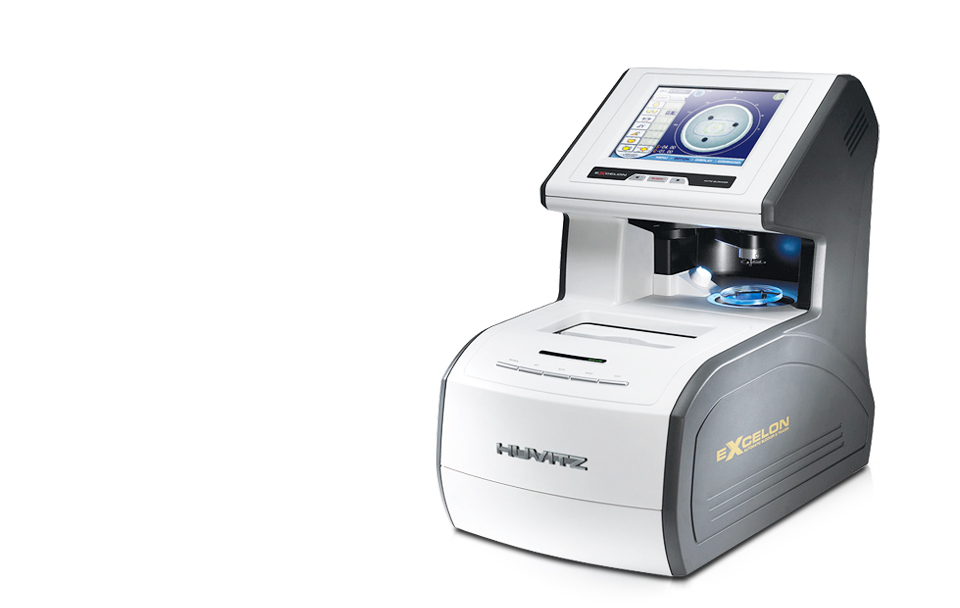

CAB-4000
트레이서, 렌즈미터, 브로커를 하나로 통합한 오토블로커
이 제품은 의료기기이며, 사용상의 주의사항과 사용방법을 잘 읽고 사용하십시오.
- 
제품소개
- 편리하고 빠른 Blocking
- 렌즈의 형상과 블로킹 중심을 LCD화면에 1:1 크기로 제시하여 편리하고빠른 자동 블로킹이 가능하며, Box Center Blocking이 기본으로 설정되어 수동 블로커와 같이 Boxing Center 포인트를 차즌번거로움을 없앴습니다.
- 렌즈타입 자동인식 기능
- 렌즈를 올려놓기만 하면 싱글렌즈, 이중초청 렌즈, 누진다초점 렌즈 등 모든 렌즈의 자동인식이 가능합니다.
- 정확한 트레이싱 및 데이터 자동전송
- 안경테 홈 위치를 자동으로 인식하고 3차원 입체트레이싱으로 정확하며 좌우, 양안 트레이싱도 쉽고 빠르게 이루어집니다. 트레이싱 데이터가 본체로 실시간 자동 전송되며 FPD, 최소렌즈직경 등의 측정값 자동 전송기능으로 더욱 편리합니다.
- 자유로운 렌즈형상편집
- 숫자 키 및 방향 화살표를 이용해 상하좌우로 자유롭게확장, 축소 등이 가능해 테 형상을 원하는 모양 그대로 변형시킬 수 있습니다.
제품사양
| 트레이싱 및 블록킹 | |
|---|---|
| 측정 방식 | 영상 및 트레이싱 |
| 렌즈 직경 | 최대직경 : 80mm / 최소직경 : 18mm |
| 렌즈미터 카메라 | CCD B/W |
| 영상 카메라 | SVGA Color 2x Image |
| 측정 가능 도수 | SPH, -20D ~ + 15D, CYL ±10D |
| 측정 스텝 | 0.01D |
| 블록킹 정확도 | -0.5 ~ +0.15mm |
| 축 정확도 | ±1º |
| 렌즈 설계 | |
| 렌즈 종류 | 일반렌즈, 누진다초점렌즈, 이중초점렌즈 |
| FPD | 30 ~ 99.50(in step of 0.01mm) |
| 양안 PD | 30 ~ 99.50(in step of 0.01mm) |
| 단안 PD | 15.0 ~ 49.75 |
| OH | ±15.00mm |
| 기타 구성 요소 |
|
| 가공 정보 | |
| 렌즈 재질 | Plastic, Glass, PC, Trivex 등 |
| 산각 종류 | 산각, 역산각, 무테 |
| 산각 위치 | mm, %, BC |
| BLOCKING | |
| 블록킹 방식 | 전동 방식 블록킹 |
| 블록킹 압력 | 2.5kgf |
| LCD | |
| LCD 크기 | 8.4 Inch 800X600 |
| 입력 방식 | 터치 패드, 조작 버튼 |
| 데이터 전송 포트 | |
| Com PORT 1 | Edger1 |
| Com PORT 2 | Edger2 |
| Com PORT 3 | Tracer Out |
| Com PORT 4 | Bar Code Reader |
| 기타 기능 | |
| 저장 기능 | 최대 1,000개 가공 정보 저장 가능 |
| Digital Scanning | 데모렌즈 형상의 영상 인식 기능 |
| LCD 밝기 조정 | LED 제어를 통한 밝기 조정 |
| 렌즈 종류 인식 | Single, 누진다초점, 이중초점 등 |
| 상기 제품의 디자인과 세부 사항은 기능 향상을 위해 사전 예고없이 변경될 수 있습니다. | |